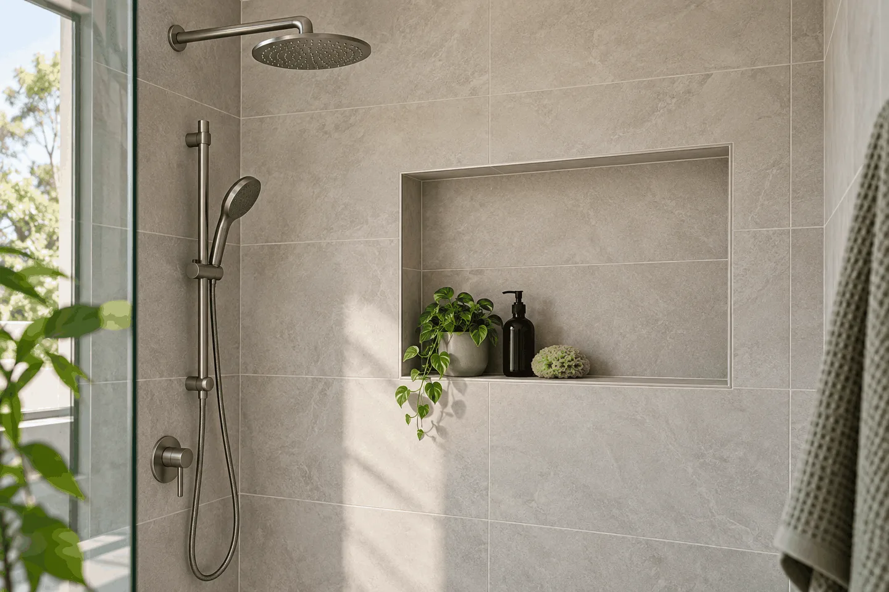

Service questions
Waterproofing & Tiling FAQs Adelaide
Clear answers about our repair scope, installation, itemised quotes and return-to-use arrangements.
REQUEST YOUR SERVICE QUOTEChoose the service for your surface
We arrange an on-site assessment, check the surfaces and confirm the work required in your written quote. Photos are optional: email safely taken photos to handyman.lyric@outlook.com. You can contact us without photos or measurements.
For the full scope, see waterproofing services, bathroom waterproofing and shower repairs or Tiling services.

Waterproofing & leak repairs
How do you repair a leaking shower?
We inspect the shower surfaces, junctions, drainage and adjoining moisture damage, then confirm the repair required. Our scope identifies seal or grout repairs, tile removal and membrane renewal where needed, with the tiled finish coordinated as part of the work.
Do you provide pool waterproofing as well as poolside tiling?
Yes. We provide pool waterproofing and pool surround or terrace tiling. We inspect the relevant surfaces and specify the preparation and materials for each scope; poolside tile installation and waterproofing inside the pool are distinct work areas.
Is waterproofing required before tiling a wet area?
We install the specified wet-area waterproofing before the tiled finish, with surface preparation, drainage and junction details coordinated as part of the service. Tiles and grout alone do not provide the waterproofing layer.
How long does a waterproofing membrane last?
We assess the accessible membrane, substrate and moisture-affected surfaces, then recommend the preparation or renewal needed for the property. The installed system, site conditions and use determine maintenance and service life.
Can waterproofing be done without removing tiles?
Ellis Services Group checks the tiled surface, joints and substrate on site. We confirm whether a local repair suits the findings and identify any tile removal required in the repair plan and written quote.
Can you waterproof over existing tiles?
It depends on the selected system and the condition of the existing tiles and substrate. Waterproofing over tiles does not repair a failed concealed membrane. We inspect the area on site and specify any tile removal and preparation needed in the repair plan and written quote.
Do I need to replace the whole bathroom?
Our team checks the seals, grout, drainage and adjoining surfaces on site. We identify the water-entry cause and confirm whether the work needs a targeted joint repair or renewal of the affected waterproofing.
What if the leak is already showing downstairs?
Stop using the affected shower and contact Ellis Services Group. We inspect the shower and the affected area below, trace the water-entry cause and confirm the repair plan and quote before retiling.
Tiling & materials
Can you repair one damaged tile without replacing the whole floor?
We inspect the damaged tile and surrounding base before replacement. Matching tile availability, access and any underlying damage determine the scope. Your quote identifies the repair area and any preparation or waterproofing work needed.
What is included in tile regrouting and shower resealing?
We remove deteriorated grout or flexible seals, prepare the joints and install suitable replacement materials. We check the surrounding surface and recurring moisture problems; where membrane repair is required, we include that work in the agreed scope rather than treating joint replacement as a substitute.
Can you tile over existing tiles?
We check the existing bond, flatness, substrate and finished height. We include over-tiling where the surface is suitable, or removal and preparation where a new base is required. A failed concealed waterproofing layer needs its own repair scope.
Do you supply tiles or install tiles I have selected?
We install your selected tiles or include tile supply in the agreed scope. We confirm quantities, format, thickness and responsibility for materials before work begins. You can contact Ellis before choosing or buying tiles.
Bathroom renovation
Does waterproofing go down before or after the screed?
Ellis confirms the selected system and applicable compliance pathway before construction. We coordinate the membrane above or below the tile bed or screed as specified for the project, with drainage falls, tile thickness and curing included in the work sequence.
Can I keep the existing shower position?
We assess the existing shower position, waste and drainage falls against your new layout. Where changes are needed, we coordinate them before the screed and membrane installation.
What if the existing waterproofing looks fine?
Ellis Services Group inspects the wet area, confirms which layers will be removed and explains the waterproofing renewal in the written renovation scope. If removal exposes extra substrate preparation, we obtain written approval before that work proceeds.
Quotes, scheduling & handover
What waterproofing and tiling services do you provide?
Ellis Services Group provides waterproofing for bathrooms, showers, laundries, kitchens, roofs, balconies, pools and external surfaces. We also deliver wall and floor tiling, tile repairs, regrouting, shower resealing and pool surround tiling across all Adelaide areas.
What determines a waterproofing or tiling quote?
The work area, surface condition, removal, substrate repairs, tile format, cuts, access and selected materials determine the quote. We measure the work on site and provide a written scope with preparation, installation, materials and timing.
How are waterproofing and tiling scheduled?
We coordinate preparation, membrane installation, the required curing and readiness checks, then tile installation and finishing. The selected system and site conditions determine the sequence and appointment schedule.
When can I use the completed bathroom or tiled area?
We confirm the affected area's downtime before work and provide curing and return-to-use instructions for the installed membrane, adhesive, grout and seals. Access and available facilities are agreed with you for bathroom work.
What happens if additional damage is found during removal?
We explain the exposed condition and the additional work required, including its cost and timing. Extra work is confirmed with you in writing before it proceeds.
What do you provide at handover?
We explain the completed work and provide care and return-to-use instructions for the installed materials. Your written scope and the records agreed for the project identify the preparation, installation and checks delivered.
Get your Adelaide waterproofing or tiling quote
Send your suburb and a short description. We confirm the work area, materials and appointments with you. For help with contact details or service selection, use the enquiry page.